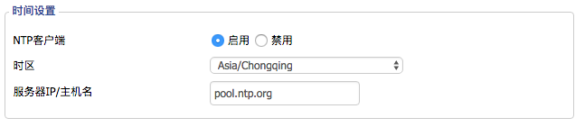

简介
OpenVPN是一个用于创建虚拟专用网络加密通道的软件包，最早由James Yonan编写。OpenVPN允许创建的VPN使用公开密钥、电子证书、或者用户名／密码来进行身份验证。
它大量使用了OpenSSL加密库中的SSLv3/TLSv1协议函数库。
目前OpenVPN能在Solaris、Linux、OpenBSD、FreeBSD、NetBSD、Mac OS X与Microsoft Windows以及Android和iOS上运行，并包含了许多安全性的功能。它并不是一个基于Web的VPN软件，也不与IPsec及其他VPN软件包兼容。
基础知识点
为什么使用PKI而不是静态密码呢？
静态加密使用的是静态密钥，它容易设置，但是缺点是：
- 一次只能有一个客户端使用服务器
- 如果密钥遭到丢失，将带来不可挽回的损失
使用PKI允许一次使用多个客户端，每个客户端都有自己的密钥。服务器不必具有客户端的任何特殊知识。OpenVPN只需要提供我们即将设置的OpenVPN CA签署的证书。反之，客户端也会验证服务器的证书
OpenVPN CA密钥不应放在OpenVPN服务器上。它仅用于签署客户端的证书，因此应该存储在可以执行操作的地方，但不能被盗。一旦CA密码被盗，你将无法再信任该CA颁发的任何证书。
什么是Certificate Authority(CA)？
你可能在应用中遇到过TLS网站证书，通常证书在WEB上下文中有两个作用
- 加密浏览器与服务器之间的数据
- 确保流览器连接到目标网站
由当浏览器信任某个证书颁发机构颁发的证书时，才可以执行第二个任务。任何人都可以制作证书，但它并不能保证证书是合法的拥有者。因为证书颁发机构可以带来可靠的额外保证，因此CA证书分为收费与免费，创建自己的CA以签署OpenVPN客户端证书是一种可以控制谁可以连接到OpenVpn服务器的有效方法。这样您的Openvpn服务器只会信任你要创建的CA签署的客户端证书。同样如果一个政府机构在互联网提供一些便民服务，那么如何有效的必免钓鱼网站的信息套取呢，注册收费的CA证书是个有效的方法。
##OpenVPN是一个用于创建虚拟专用网络加密通道的软件包，最早由James Yonan编写。OpenVPN允许创建的VPN使用公开密钥、电子证书、或者用户名／密码来进行身份验证。
它大量使用了OpenSSL加密库中的SSLv3/TLSv1协议函数库。
完美前向保密PFS（perfect forward secrecy）
“perfect forward secrecy”则是由Christoph G. Günther在EUROCRYPT ’89提出的，其最初用于定义会话密钥交换协议的一种安全性。它的作用是保证密钥丢失之前的消息案全性或签名的不可伪造性。一般而言公钥是固定的，而密钥则随着时间进行更新。这个更新过程是单向的，因引也就保证了拿到当前的密钥，是无法恢复出以前的密钥，从而保证了前向安全。
Openvpn服务器配置我们将使用“perfect forward secrecy”，也就是说，加密的数据即使在前进的进候也会是秘密的。用于连接的证书和密钥不用于加密您的通讯数据。它们在传递数据时使用临时的加密密钥。默认情况下，这个临时密钥随着时间的推移每小时旋转一次。以这种方式，如果来不法份子收集了VPN数据包要想获得临时密钥那是不可能的，它允其量能够解密你最后一小时的数据。
在Openvpn服务器上配置了perfect forward secrecy你会在日志中看到每小时数据重置的情况。
1 | Tue Jun 13 01:51:20 2017 client/142.68.135.226:53504 TLS: soft reset sec=0 bytes=51538/0 pkts=255/0 |
Openvpn允许您控制旋转周期以匹配偏执狂级别。在server.conf文件中配置reneg-sec xx控制关键周期是多少秒。
都包括哪个密钥文件
Key文件（*.key）
这个是应该保密的私钥文件。只有所有者才需要使用私钥，所以它不应该在随意丢放。它可以用来代表其的所有者进行加密、解密和签名文件。
证书文件（*.crt）
这是个可以公开使用的公钥文件。证书文件只能用于对私有密钥所有者签名的文件进行加密或验证，因此可以广泛共享。在Openvpn上下文中，证书文件用于验证Openvpn服务器本身的身份以及连接客户端的标识。由于这引动证书是由我们信任的CA签署的，双方都会信任它。
证书签名请求文件(*.csr)
CA证书不需要客户端的私钥来生成，它需要来自客户端的CSR一完成，CSR由客户端签名，因此CA信任它是合法的请求并返回签名的证书文件。在购买SSL证书时，CSR的使用更为常见。在服务器上生成CSR，并将其提供给SSL供应商，然后它们将证书文件返回给您，然后将证书文件安装到服务器上。
Linux环境下配置openvpn
ubuntu环境下安装OpenVPN
1 | $ sudo apt-get install openvpn |
生成服务器及客户端相关证书
为了安全起见，建议不要在服务器上安装easy-rsa密钥生成程序，因为我不希望我的密钥出现在服务器上。
1 | $ sudo apt-get install easy-rsa |
OR
1 | $ /usr/bin/make-cadir CA |
设置vars文件，此文件包含我们制作证书所需要的默认值，将这些值设置在53，64～69行之间。53 export KEY_SIZE=2048 64 export KEY_COUNTRY="CN" 65 export KEY_PROVINCE="ZheJiang" 66 export KEY_CITY="HangZhou" 67 export KEY_ORG="A Li Ba Ba" 68 export KEY_EMAIL="ca@ali.com" 69 export KEY_OU="Inspections"
接下来，下面的命令将在keys目录中生成CA证书和密钥。
1 | [ ~/CA ]$ source ./vars |
执行后在keys文件夹中生成如下文件：ca.crt ca.key
现在创建服务器的密钥。虽然你希望接受输入密码的挑战，但这不是个好主意，因为如果输入密码，那每次服务器启动后都需要输入密码。除非服务器每次重启时都在那里。
你可以任意指定服务器的名称。访名称将用作生成的密钥、CRT和CSR文件的文件名。
1 | [ ~/CA ]$ ./build-key-server server |
我们现在需要创建一些Diffie-Hellman数据。此数据用于生成临时密钥，该密钥将在Openvpn会话期间使用以创建完美的向前保密。你可以使用4096位，位数越高需要的时间越长。若要强制使用较长的键，请将vars文件的第53行更改为所需的密钥长度。
1 | $ ./build-dh |
在计算中，entropy被定义为系统上可用的随机性的数量，这些随机性可以被需要随机数据的进程所利用。密码学是entropy的巨大消耗者。计算机系统从它们的环境中提取entropy，比轺鼠标移动、风扇噪音，以及任何自然界中适当的随机现象。空闲系统通常具有较少的可用entropy，因此密钥生成可能需要更长的时间。此外，entropy不是有限的。一个具有大量entropy的系统可能在创建多个密钥后“耗尽”，因此后续的密钥可能需要更长的时间来生成。在极端情况下，没有entropy或低entropy的系统实际上可以创建较不安全的密钥。
回顾一下：我们现在有两个我们需要的三件事。我们有一个带有签名密钥的CA设置，并且有一组服务器凭据（一个密钥和一个crt），并且证书由CA签名。那些，我只打算创建一组客户机凭证，但是您可以根据需要多次重新运行的构建命令，以创建尽可能多的客户机凭证。
此外，与服务器密钥不同，当用户希望连接时，他必须提供密码连接，这时可以在创建客户密钥的时候指定密码。
1 | [ ~/CA ]$ ./build-key client |
现在我们在keys文件夹中生成的相关密钥文件，目录如下：
服务器和客户端文件各生成三个文件，一个CRT文件，一个密钥文件和一个CSR文件。CA文件只有两种类型，一个CRT和一个密钥。这是因为CA签署了自已的证书，因此不需要生成CSR来请求它签署自己的证书。
由于CA签名的证书需要提供CSR，因此可以在隔离的系统上创建客户端和服务器密钥和CSR文件，然后仅向CA提交CSR以获得证书。这意味着客户端密钥不需要知道CA。但是easy-rsa就是这样，很简单。像这样的高级配置需要使用OpenSSL而不是简单的RSA脚本。
如果我们查看server.crt和client.crt文件的顶部，我们可以看到这些证书已经签名：
1 | [ ~/CA/keys ]$ head server.crt |
最后一件事是生成用于将OpenVPN作为完美的前向保密的TLS密钥。
1 | [ ~/CA/keys ]$ openvpn --genkey --secret pfs.key |
以上生成了一个名这pfs密钥的密钥，该密钥将在客户端和服务器上都需要。回想一下，所有这些文件都驻留在本地系统上，而不是服务器上。为了使Openvpn服务器运行，我们需要将必要的文件传输到Openvpn服务器。Openvpn服务器只需要以下文件：
- dh2048.pem
- server.key
- serrer.crt
- ca.crt
- pfs.key
使用easy-rsa3.0证书认证
1 | apt-get install easy-rsa |
创建ca证书
1 | ./easyrsa build-ca |
创建服务器证书server.crt
1 | ./easyrsa gen-req server nopass |
创建dh证书
1 | ./easyrsa gen-dh |
创建ta密钥
1 | cd /etc/OpenVPN |
创建客户端证书
1 | ./easyrsa gen-req client nopass |
配置OpenVPN服务端
现在我们已经准备好了所有凭证文件，我们需要构建一个简单的Openvpn配置文件来告诉OpenVPN在哪里可以找到这些文件，并且还要指定一些需要运行的基本配置。将带有示例的服务器配置文件复制到Openvpn目录中并使用。
1 | $ sudo cp /usr/share/doc/openvpn/examples/sample-config-files/server.conf.gz /etc/openvpn && sudo gunzip server.conf.gunzip |
查看配置文件的第78至80行：
1 | 75 # Any X509 key management system can be used. |
Diffle-Hellman文件的路径需要更正，下面是配置文件的：
1 | port 1194 |
如果启动Openvpn有问题，可以将日志记录的详细信息从3增到6，以便得到更多的详细信息。以上配置足以允许Openvpn客户端连接到服务器，但是服务器还不能代理任何互联网的数据，为了允许这一点，请在服务器上输入如下命令：
1 | $ sudo iptables -t nat -A POSTROUTING -s 10.8.0.0/24 -o eth0 -j MASQUERADE |
第一条命令允许客户端使用服务器作为Internet代理，它将客户端流量（网络10.8.0.x）呼由一服务器上的eth0网络接口上。eth0接口通常是广域网接口。
第二条命令是允许内核转转IPv4流量，这对于VPN来说是必需的。
1 | $ sudo openvpn server.conf # 开启Openvpn服务 |
配置OpenVPN客户端
1 | client |
ubuntu下OpenVPN客户端配置教程
首先需要安装OpenVPN客户端。一般来说直接使用apt-get即可。执行如下命令安装
1 | ~$ sudo apt-get install openvpn |
配置OpenVPN客户端
作为客户端，OpenVPN并没有特定的配置文件，而是由服务器提供给出一个配置文件。对于认证，OpenVPN提供了两种认证方法：基于用户名/密码的认证与SSL证书认证。用户名/密码方式无法（或较难）限制一个账号同时连接多个客户端，而采用证书，则可保证同一证书同一时间只能有一个客户端连接。当然，这些都是由服务器决定的，不需要客户端进行选择。
将客户端配置文件放到/etc/openvpn/中
连接OpenVPN
在配置好.ovpn文件后，执行
1 | openvpn /etc/openvpn/client.ovpn |
DD-WRT环境下配置openvpn
基本设置–>时间设置

为解决路由器重启时无可用时间问题在启动时加入如下代码
- 注意要保证网络通畅，可在路由器的SSH命令行或telnet命令行下ping一下地址是否通畅；
- 注意路由器的工作模式，如果本路由器正在控制您的Internet连接，选择网关模式。如果是网络中已经存在的另外一个路由器，选择路由模式
1
2
3ntpclient pool.ntp.org
stopservice process_monitor
startservice process_monitor图形界面启用OpenVPN Server
服务–>VPN
- OpenVPN : 启用
- Start Type : WAN up
- Config as : Server
- Server mode : Router(TUN)
- Network : 10.8.0.0
- Netmask : 255.255.255.0
- 端口 ： 1194
- 通道协议 ： UDP
- Encryption Cipher : AES-256 CBC
- Hash Algorithm : SHA512
- Advanced Options : 禁用
- 公共服务器端证书 : ca.crt
- Public Server Cert : server.crt
- Private Server Key : server.key
- DH PEM : dh2048.pem
- TLS Auth Key : ta.key
- Additional Config:
1
2
3push "route 192.168.1.0 255.255.255.0"
push "dhcp-option DNS 8.8.8.8"
push "dhcp-option DNS 8.8.4.4"
防火墙配置
管理–>命令–>保存为防火墙指令
1 | iptables -I INPUT 1 -p tcp --dport 1194 -j ACCEPT |
配置OpenVPN Server自启动
创建启动文件openvpn.startup
1 |
|